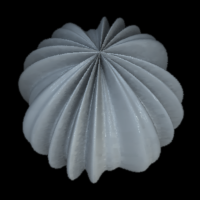
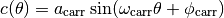
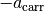
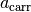
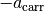
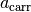
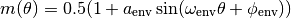
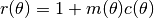

Modulating the modulation¶
Carriers and envelopes¶
In the examples so far, the modulation had a constant amplitude everywhere. It is possible to produce more complex or varied modulations by using separate carrier waves and envelopes. In the examples so far, we have been using only the “carrier” components. The envelope multiplies the carrier amplitude as illustrated below:

The envelope (or “modulator”) parameters are given as the second input argument to objMakeSine. The format of the parameter vector is the same as that for the carrier components. The example below has a single carrier component and a single envelope, or modulator, with the same parameters the illustration above uses:
objMakeSine('sphere',[16 .1 0 0],[4 1 0 0]);

If the envelope amplitude is 1, the envelope values range from 0 to 1. At the peak of the envelope, the carrier thus has the peak amplitude defined by its own amplitude parameter. At the trough of the envelope, the carrier amplitude goes to zero. If the envelope amplitude is lower than one, the range of envelope values is decreased (a trough will be higher than zero, peak will be lower than one). An envelope amplitude of 0 leads to a uniform envelope with a constant value of 0.5. See more below in Carrier and envelope amplitude.
The carrier and the envelope do not need to have the same orientation. In the earlier examples, when using vertical carriers, the ridges in the sphere object become very sharp near the poles of the sphere (as this is where the meridians, or lines of longitude, meet). To smooth these out, we could add a low-frequency, orthogonal envelope:
objMakeSine('sphere',[12 .1 0 0],[2 1 90 90]);
Bundling carriers and envelopes: Group indices¶
Sometimes you might want to have one envelope modulating one carrier and another envelope modulating another carrier. This way you can, for example, alternate between two carriers. In the next example, we have a low-frequency and a high-frequency carrier that have the same angle. They are modulated by two low-frequency envelopes that are 180 degrees out-of-phase but otherwise identical. The way to connect the carrier to the envelope is to use an additional parameter, the group index. The format of the parameter vector is then:
prm = [frequency amplitude phase angle groupid]
This example sets group indices 1 and 2 for the first and second component.
prm_carr = [ 8 .1 0 0 1
24 .1 0 0 2];
prm_env = [4 1 0 0 1
4 1 180 0 2];
objMakeSine('sphere',prm_carr,prm_env)
Below is the rendered object. The schematic on the right shows the profile of the modulations and illustrates the multiplication and addition of the carriers and envelopes within the groups.

In the next example, we have two high-frequency carriers that have opposite angle but that are otherwise identical:
prm_carr = [20 .1 0 60 1
20 .1 0 -60 2];
prm_env = [4 1 0 0 1
4 1 180 0 2];
objMakeSine('sphere',prm_carr,prm_env);

Group index 0 is special: A carrier that has a group index of 0 is added to the other components as is, before being multiplied by any envelope. These other components might be either single carriers or carriers already multiplied with an envelope (with a non-zero group index). An envelope that has a group index 0 multiplies all the other components after they have been added together. This is used in the following example, which is a modification of the one above. We define the modulated carrier components as above, but we add an orthogonal modulator to get rid of the high-frequency ridges at the poles. We give this third envelope a group index of 0 so that it multiplies all the other components after they have been added together. Zero is also the default group index if none is defined.
prm_carr = [20 .1 0 60 1
20 .1 0 -60 2];
prm_env = [4 1 0 0 1
4 1 180 0 2
2 1 90 90 0];
objMakeSine('sphere',prm_carr,prm_env);
If there is more than one carrier in a group, they are added together first before being multiplied by the envelope. If there is more than one envelope in a group, they are multiplied before they multiply the carriers.
Carrier and envelope amplitude¶
In this example, we’ll ignore the orientation of the carriers and
envelopes and work with a simple one-dimensional example to illustrate
how the carriers and envelopes are combined. The profile of the
carrier wave, as a function of the angle  , is:
, is:

where  ,
,  , and
, and  are the amplitude,
frequency, and phase. The values of the carrier range from
 to .
are the amplitude,
frequency, and phase. The values of the carrier range from
 to .
Next the envelope, or modulator:

The values of the envelope are positive. With an amplitude of 1, the values range from 0 to 1, with an amplitude of 0.5, the values range from 0.25 to 0.75, and so on.
Finally, the radius of the sphere, as a function of the angle, is:

That is, without any components to modulate the radius (or with a carrier amplitude of 0), the radius is one.